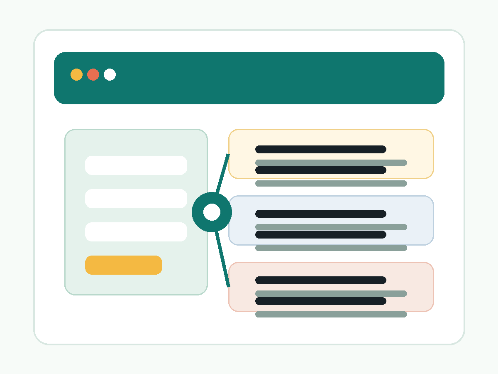

Entry
無料AI活用チェック
現状の業務でAIに向く場所と、不安要素の入口確認を行います。
- 3分の簡易チェック
- 簡易診断タイプの表示
- 個別相談への入口
Service
無料AI活用チェックで入口を確認し、必要に応じて個別相談やミニ診断へ進む構成です。 AI導入を急がず、業務の棚卸しから始めたい方向けに設計しています。

3つの入口
Entry
現状の業務でAIに向く場所と、不安要素の入口確認を行います。
Core
業務課題、優先順位、AIに任せる範囲を具体化します。
Support
運用ルール、テンプレート、導入順序まで含めた初期設計を行います。
比較表
価格だけではなく、得られるものと向いている状況で見比べやすくしています。
| 項目 | 無料AI活用チェック | 個別相談 / ミニ診断 | 導入スターター支援 |
|---|---|---|---|
| 目的 | 入口確認 | 優先業務の具体化 | 運用開始の初期設計 |
| 向いている状態 | 何から始めるか迷っている | 相談しながら絞り込みたい | 実際に使い始める準備を進めたい |
| 得られるもの | 活用タイプの把握 | 改善候補と初期テンプレート案 | ロードマップ、ルール、プロンプト集 |
| 所要感 | 3分程度 | 60分ヒアリング | 複数工程で整理 |
| 料金目安 | 0円 | 30,000円〜 | 100,000円〜 |
できること
現場で使いやすい範囲から始める前提で、補助業務と人の判断が必要な業務を分けます。
問い合わせ対応、発信、資料作成、教育など、繰り返しが多い仕事を整理します。
AIに任せやすい作業と、人が最終判断すべき作業を切り分けます。
メール返信、投稿案、資料作成、FAQ草案などの下書き向けに整理します。
機密情報、著作権、外部公開前の確認など、初期ルールのたたき台を整えます。
SNS投稿とHPのコラム導線をつなげ、集客と理解促進を両立します。
専門判断の代替をうたわず、安全に始める前提条件を先に確認します。
料金プラン
Free
0円
Popular
30,000円〜
Starter
100,000円〜
導入の流れ
Step 1
現在の業務、利用状況、不安点を整理する入口です。
Step 2
回答内容をもとに、個別相談が必要かどうかを確認します。
Step 3
優先業務と初期アクションを絞り、改善案のたたき台を作ります。
Step 4
テンプレート、ルール、使い始めの運用まで含めて整えます。
相談の相性
進みやすいケース
事前に確認が必要なケース